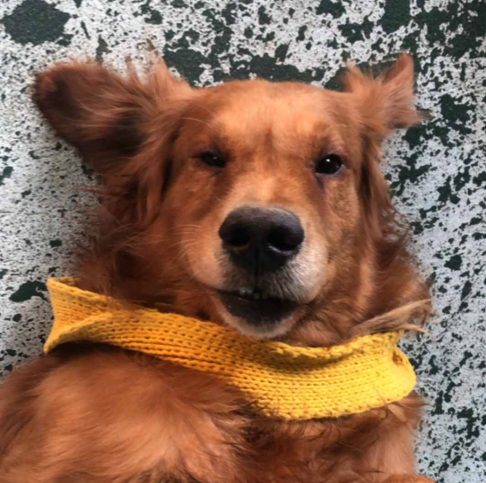

Him wearing a crochet collar which I made for him.

Wink Wink ;)
Hello! My name is Hlaine Nadi Khant and this is my website submission for the Web Systems assignment. I am currently doing a Bachelor of Computing Science at UTS. I have a dog named Jackie back at my home country whom I miss a lot and haven't seen him for over a year. So, hopefully I can go visit home and see him this year and below are some photos of him.
Him wearing a crochet collar which I made for him.
Wink Wink ;)
I started taking interest in photography around 2019, initially using my phone to take photos. By 2020, I had saved enough to buy a digital camera but later, my focus shifted to film photography. Ever since I got to Sydney, I have been enjoying taking film photos especially in black and white.
Another thing I like to do during my downtime is to draw. I picked up drawing around 2020 during the pandemic where I taught myself through YouTube videos, focusing mainly on portraits.
As someone who likes photography, I also enjoy watching movies. Sometimes, I enjoy watching movies with friends and one of my favorites from recent watches would be Dune: Part Two. Additionally, I find myself drawn to animated movies, especially those produced by Studio Ghibli.